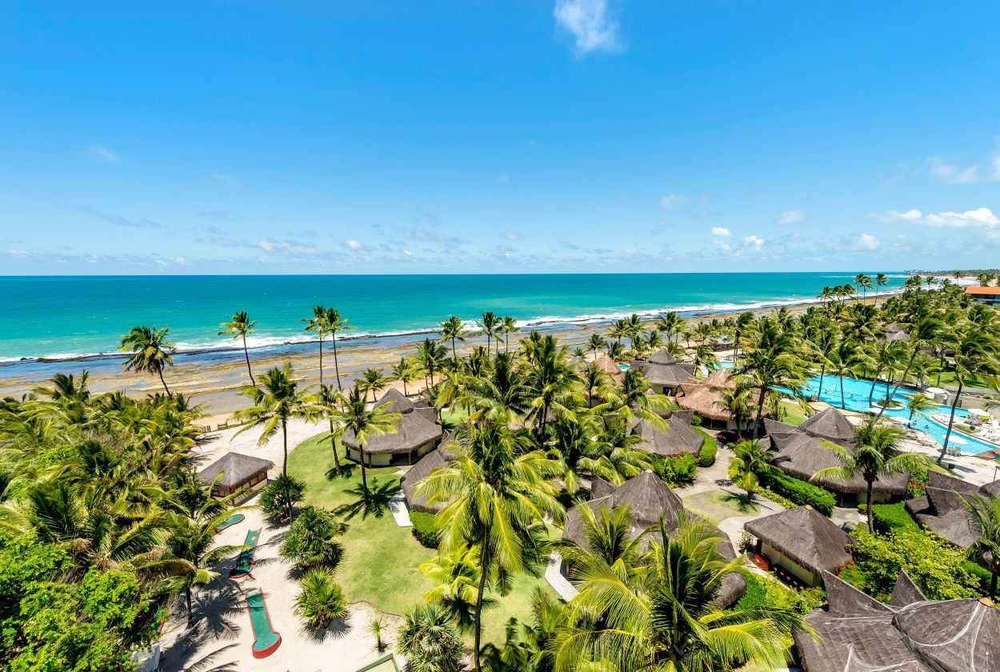

Summerville Resort, Porto de Galinhas - PE

O Summerville Beach Resort está localizado em Porto de Galinhas, no litoral sul de Pernambuco, a cerca de 60 quilômetros do Recife. O complexo é cercado por vegetação nativa e coqueiros, com chalés distribuídos ao longo do terreno e piscinas em diferentes pontos da propriedade.
A principal atração da região são as piscinas naturais formadas pelos recifes de corais, acessíveis por passeio de jangada a partir da praia de Porto de Galinhas, que fica a poucos minutos do resort. O passeio costuma esgotar rapidamente, especialmente na alta temporada, e é recomendável reservar logo na chegada.
A Vila de Porto de Galinhas oferece opções de comércio e gastronomia local para quem quiser sair do resort. O período entre setembro e março concentra as melhores condições climáticas da região, com menos chuva e mar mais calmo para a realização dos passeios.
← Voltar